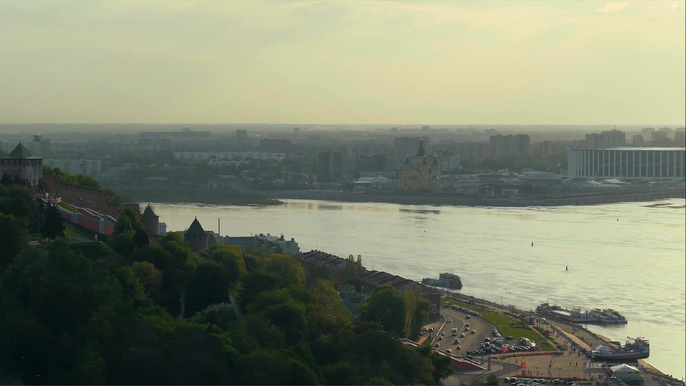

Нижегородская ярмарка была главной торговой площадкой страны, а Нижегородская область сегодня — один из крупнейших промышленных регионов России. Три эпохи: купеческий Нижний XIX века, индустриализация XX века и наши дни.
Волга и Ока встречаются в Нижнем Новгороде.
Сначала торговлю обслуживали реки, с 1862 года — железная дорога, сегодня — трассы и аэропорт.
Положение на путях сообщения сделало регион деловым центром.
После пожара 1816 года Макарьевскую ярмарку перенесли в Нижний: первые торги — в 1817-м, каменный комплекс Бетанкура — в 1822-м. Сюда съезжались купцы из губерний России, Персии и Средней Азии.
Доходы с ярмарки купцы вкладывали в мельницы, сталь и пароходы — так торговля подготовила промышленность.
После 1917 года торговый город стал промышленным. Ярмарку ликвидировали в 1930-м, автозавод построили по соглашению с Ford, а в войну ГАЗ, «Красное Сормово» и «Сокол» выпускали танки, подлодки и истребители.
К 1990 году Нижегородская земля стала производственным и оборонным центром страны. Основа сохранилась: ГАЗ выпускает автомобили и автобусы, «Красное Сормово» строит суда, «Сокол» — самолёты.
В XIX веке сюда привозили товары, в XX — строили заводы. Сегодня в регионе одновременно работают крупные предприятия, ИТ-разработчики, малые компании и новые производства.
Промыслы — это история местных сообществ, ручной труд, производство, дизайн и туризм. Сегодня они ищут покупателей через магазины, выставки, дизайнеров и туристические проекты.
Регион стал деловым центром не случайно: его сделали реки, пути сообщения и люди, которые на этих путях торговали и строили. Экономика изменилась, но функция ярмарки — соединять людей и идеи — сохранилась.